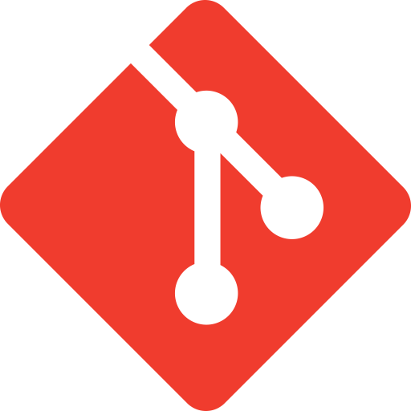
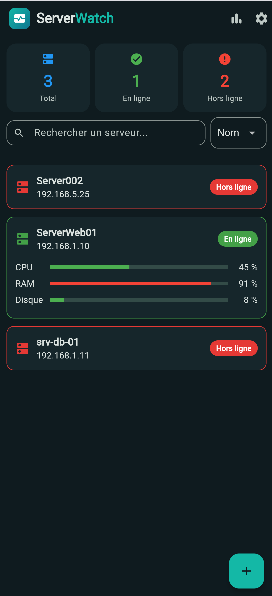

.png)
Kali Linux
Distribution spécialisée en tests de sécurité et simulation d'attaques (scan réseau, tests d'intrusion).
Je suis Kanto, étudiante en deuxième année de licence à l'École Nationale d'Informatique de Fianarantsoa, dans le parcours ISII (Ingénierie des Systèmes et d'Information Intégrée). Passionnée par l'infrastructure et la sécurité, je me spécialise dans l'installation, la supervision et la surveillance des systèmes.
Projet, alternance, stage ; travaillons ensemble !
Curieuse et rigoureuse, j'acquiers des compétences solides à la fois dans le développement et dans l'administration système et réseau. Mon profil s'oriente particulièrement vers la mise en place d'environnements sécurisés et le monitoring proactif. Je suis actuellement à la recherche d'un stage pour mettre en pratique mes compétences techniques.
Distribution spécialisée en tests de sécurité et simulation d'attaques (scan réseau, tests d'intrusion).
Gestion d'environnements d'entreprise et administration des rôles AD DS (Active Directory Domain Services).

Contrôle de version distribué, suivi d'historique et collaboration sur le code source.
Plateforme open source de sécurité, analyse de journaux (logs) et détection d'incidents en temps réel.
Maîtrise de HTML, CSS, JavaScript, PHP et notions de développement mobile en Dart (Flutter).
Conception et manipulation de données avec MySQL, PostgreSQL et SQLite.

Application mobile de supervision de serveurs : état, consommation
de CPU, de RAM et de disque, historique et incidents.
Projet en cours avec Flutter (Dart), une API FastAPI, une base
PostgreSQL et un agent de mesure en Python. Les notifications en
cas de panne sont la prochaine étape.
Stage de fin d'année portant sur l'administration système,
l'administration réseau et la supervision.
Étude et détection d'une attaque sur Active Directory par
corrélation d'événements.
Développement de connaissances sur Wazuh SIEM, un outil de
supervision très connu et facile à manipuler.
Formation approfondie en génie logiciel, réseaux, administration système et sécurité informatique.
Formation approfondie sur l'administration système, l'utilisation
des serveurs d'administration et des outils concernés.
Cursus approfondi en administration réseau.
Formation pour débuter dans le monde de l'informatique, acquisition des bases utiles dans le domaine de l'informatique.
Une opportunité de stage ou un projet à confier ? N'hésitez pas à me contacter !